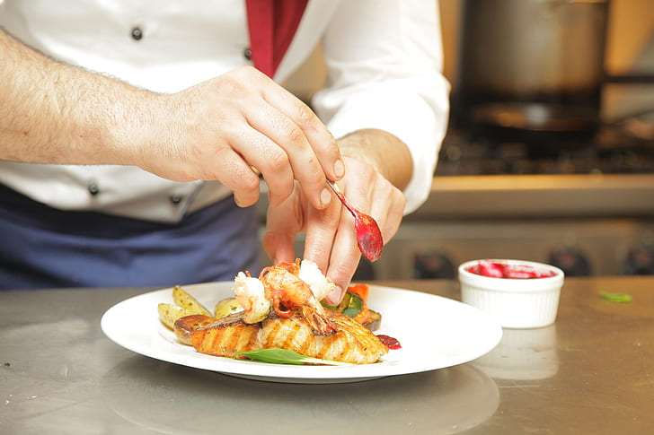

My Favorite Food Recipes |
|||
Welcome to My Favorite Food Recipes |
|||
Here, you will find information about the foods I love and the recipes I delight preparing.Recipes hold a certain beauty that goes beyond the culinary realm. They represent a fusion of creativity, practicality, and cultural heritage, transforming humble ingredients into mouthwatering masterpieces. Each recipe carries a story, a legacy passed down through generations, often infused with the unique flavors and traditions of a particular region or time period. Please check out the following animation created using PPT: |
|||
What does it feel when preparng a meal?The basic steps of cooking involve preparing ingredients, following a recipe, and using various cooking techniques. First, gather and prepare the necessary ingredients, such as chopping vegetables, measuring spices, and marinating meats. Next, follow the recipe instructions carefully, using appropriate cooking methods like sautéing, roasting, or simmering. Finally, plate the cooked dish and serve it promptly to enjoy the flavors and textures. |
 | ||
|
© 2023 My Favorite Food Recipes |
|||